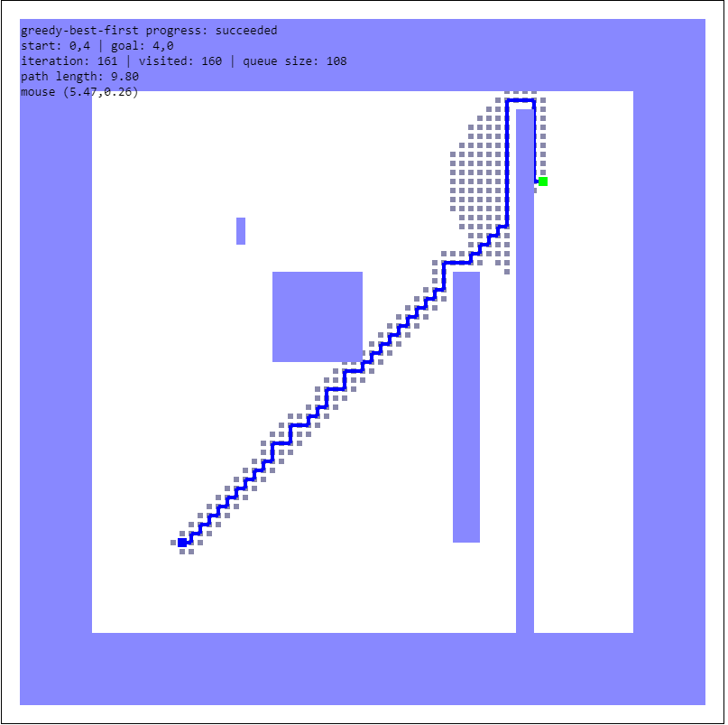

Figure 1. A-star result in empty space
Figure 2. A-star result in 3 sec space

Figure 3. A-star result in misc space

Figure 4. A-star result in narrow1 space
Figure 5. A-star result in narrow2 space
Multiple path planning algorithms are implemented in this assignment. These algorithms include A-star, DFS, BFS and greedy best first search. Each of them has their pros and cons. This report will compare and analysis their difference and propose a use case when they are appropriate.
First of all, the performance of these algorithms will be compared in the setting of same start and end point on different maps.
Figure 1. A-star result in empty space
Figure 2. A-star result in 3 sec space
Figure 3. A-star result in misc space
Figure 4. A-star result in narrow1 space
Figure 5. A-star result in narrow2 space
Figure 6. DFS result in empty space
Figure 7. DFS result in 3 sec space
Figure 8. DFS result in misc space
Figure 9. DFS result in narrow1 space
Figure 10. DFS result in narrow2 space
Figure 11. BFS result in empty space
Figure 12. BFS result in 3 sec space
Figure 13. BFS result in misc space
Figure 14. BFS result in narrow1 space
Figure 15. BFS result in narrow2 space
Figure 16. Greedy result in empty space
Figure 17. Greedy result in 3 sec space

Figure 18. Greedy result in misc space
Figure 19. Greedy result in narrow1 space
Figure 20. Greedy result in narrow2 space
| Algorithm | Scene | Iteration | Path Length |
|---|---|---|---|
| a-star | empty | 2873 | 8 |
| DFS | empty | 1281 | 128 |
| BFS | empty | 3501 | 8 |
| greedy | empty | 81 | 8 |
| a-star | misc | 2611 | 9.8 |
| DFS | misc | 1590 | 95.8 |
| BFS | misc | 3235 | 9.8 |
| greedy | misc | 2074 | 17.8 |
| a-star | narrow1 | 934 | 8 |
| DFS | narrow1 | 685 | 66.2 |
| BFS | narrow1 | 1568 | 8 |
| greedy | narrow1 | 81 | 8 |
| a-star | narrow2 | 1394 | 11.4 |
| DFS | narrow2 | 649 | 62.6 |
| BFS | narrow2 | 2095 | 11.4 |
| greedy | narrow2 | 138 | 11.4 |
| a-star | 3 section | 2538 | 14.2 |
| DFS | 3 section | 1071 | 95.6 |
| BFS | 3 section | 3165 | 14.2 |
| greedy | 3 section | 905 | 14.4 |
Table 1. Algorithm Outcome in Different Scenes with Same Start and Goal Point
As shown by the figures above, BFS, a-star always produce the shortest path towards the goal. Greedy best first search produce a result that is less optimized under certain configuration. DFS, on the other hand, produce a bad result even if it usually have a low iteration count.
A-star algorithm is definitely the most robust and optimized path planning algorithm among these four because it reduced the amount of computation for a considerable amount by biasing the searching process towards the target. In addition, it still take the environment into account so that it won't miss the best route along the search. This is especially important when being applied to robotics because of robotics' nature of interating with unpredictable environment.
However, greedy best first search(GBFS) is still worth considering. If the robot is expected to work in an environment such that is stable and has minimum amount of obstacles, GBFS can be a better choice. By putting the robot in a more predictable environment, the robot is more likely to avoid the extra computation caused by incorrect prediction from GBFS. Moreover, GBFS significantly cut off the computational complexity. This can free up memory and power for the robot to perform other processes.
Finally, DFS and BFS may not be a good choice for path planning, but if the robot need to explore the entire map for some purpose. They can be more useful than the other two because neither A-star nor GBFS explore the entire map.In addition, for map exploration, DFS would be serve the purpose better. As shown by the statistisc, DFS generally have an iteration count that is less than half of BFS's iteration count.
In the previous section, the algorithms analyzed on whether they are appropriate for robot path planning. In this Section, algorithms fit for the purpose(A-star, GBFS) will be analyzed by performance given different start and goal point.
Figure 21. A-star result 1 in 3 sec space
Figure 22. A-star result 1 in misc space
Figure 23. A-star result 1 in narrow1 space
Figure 24. A-star result 1 in narrow2 space

Figure 25. A-star result 2 in 3 sec space
Figure 26. A-star result 2 in misc space
Figure 27. A-star result 2 in narrow1 space
Figure 28. A-star result 2 in narrow2 space
Figure 29. Greedy result 1 in 3 sec space
Figure 30. Greedy result 1 in misc space
Figure 31. Greedy result 1 in narrow1 space
Figure 32. Greedy result 1 in narrow2 space
Figure 33. Greedy result 2 in 3 sec space
Figure 34. Greedy result 2 in misc space
Figure 35. Greedy result 2 in narrow1 space
Figure 36. Greedy result 2 in narrow2 space
| Algorithm | Scene | Iteration | Path Length | Algorithm | Scene | Iteration | Path Length | |
|---|---|---|---|---|---|---|---|---|
| a-star | 3-section 1 | 3165 | 14.2 | greedy | 3-section 1 | 905 | 14.4 | |
| a-star | 3-section 2 | 1694 | 8 | greedy | 3-section 2 | 647 | 8.4 | |
| a-star | misc 1 | 2611 | 9.8 | greedy | misc 1 | 2074 | 17.8 | |
| a-star | misc 2 | 2130 | 9.8 | greedy | misc 2 | 161 | 9.8 | |
| a-star | narrow1 1 | 934 | 8 | greedy | narrow1 1 | 81 | 8 | |
| a-star | narrow1 2 | 1469 | 8 | greedy | narrow1 2 | 770 | 9 | |
| a-star | narrow2 1 | 1394 | 11.4 | greedy | narrow2 1 | 138 | 11.4 | |
| a-star | narrow2 2 | 1469 | 8 | greedy | narrow2 2 | 770 | 9 |
Table 2. Algorithm Outcome in Multiple Scenes with Different Start and Goal Point
From the statistics and figure above, it is easy to see that A-star has a stable performance. A-star's performance in the same map wasn't affected significantly by where it starts and ends. On the other hand, GBFS is observed to perform extremly well in both time and getting the optimal path when there is no or few obstacles on its direct path towards the goal. But when that is not the case, GBFS produce a path that detours and sometimes goes in the opposite direction. In conclusion, GBFS saves computing power significantly if the environment has simple geometry and are expected to have low interference. While A-star is versatile but cost more time and power to make a more precise prediction.